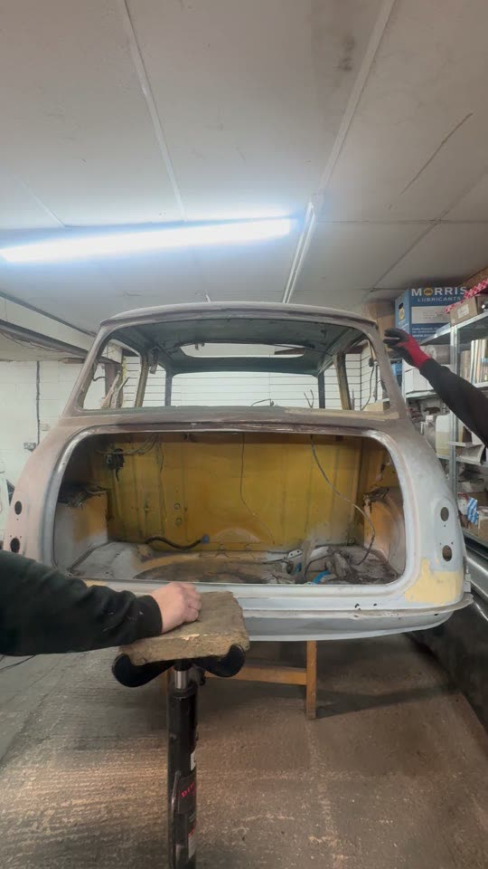
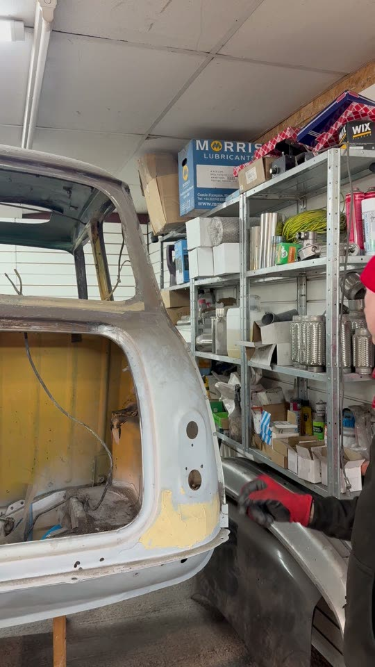
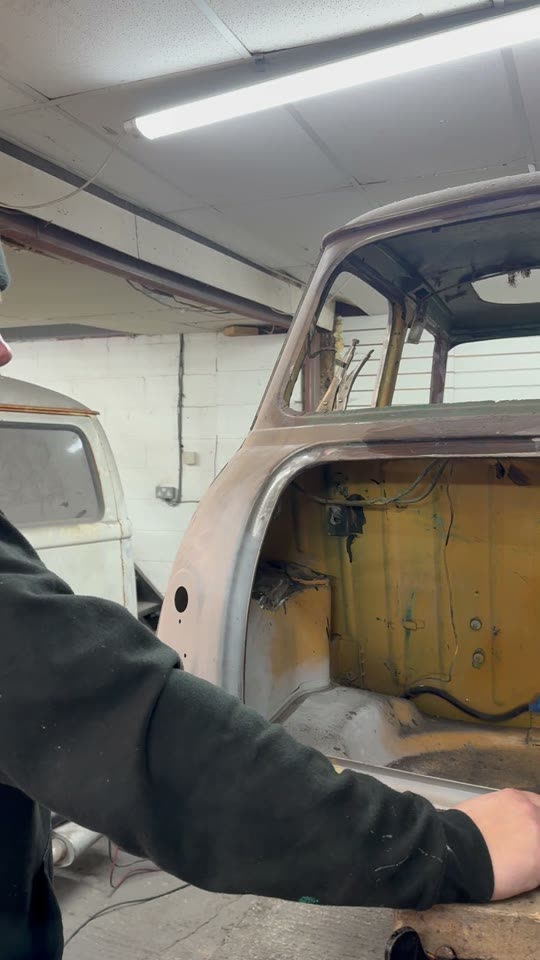

Builds / Classic Mini
Classic Mini Shell Restoration: Seams On or Seams Off?
A classic Mini shell is in the workshop, stripped back and ready for bodywork. The first big decision: what to do with the famous outer seams.
On a classic Mini the seams are double-welded on the outside of the body. We're taking the side and front seams off and keeping the top seam, because it's all about how the shell looks once it's in paint.

Build spec
- Car
- Classic Mini
- Stage
- Bare shell, bodywork
- Seams
- Side and front off, top seam stays
- Status
- Bodywork in progress
Build log

Seams on or seams off?
The outer seams are double-welded on the outside of the shell. The side and front seams come off for a smoother look in paint; the top seam stays on.
Watch the build
More photos

Questions
Why do classic Minis have external seams?
The classic Mini shell was built with its panel seams welded on the outside of the body. Some builders remove them for a smoother, modern look; others keep them for originality.